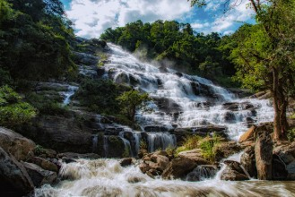
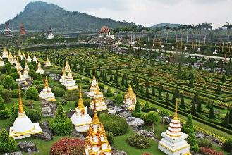

Chiang Mai (เชียงใหม่)
Chiang Mai é o eixo do norte da Tailândia e a cidade mais importante da região.Chiang significa cidade no dialeto do norte tailandês, e Mai significa novo; portanto, Chiang Mai = Cidade Nova.
Apesar no nome, a cidade não é nem um pouco nova, já que foi fundada em 1296.
É uma a cidade cultural e historicamente muito interessante, e já foi capital do antigo reino de Lanna (que englobava o norte tailandês e partes do Laos).
Está localizada em um terreno plano, elevado há 316m acima do nível do mar, e é cercada de montanhas e por uma natureza exuberante.
Por ficar em uma localização de difícil acesso no passado, há 700km ao norte de Bangcoc, até os anos 1920 só podia ser alcançada através de uma árdua jornada em rios ou caminhadas de elefantes. Este isolamente ajudou a manter intacto o distinto charme da cidade.
Dentro dos muros que cercavam a cidade (ou do que sobrou deles), estão mais de 30 templos datando da época da fundação da cidade, em uma combinação de estilos birmaneses, cingalês e Lanna, decorados com belas esculturas em madeira, escadas com najas, guardiões leoninos e angelicais, guarda chuvas dourados e pagodes enfeitados com filigrana dourada. O mais famoso deles é o Wat Phrathat Doi Suthep, que dá uma ótima vista da cidade há 13km de distância.
A Chiang Mai dos dias modernos se expandiu em todas as direções, mas particularmente para o leste, em direção ao Rio Ping (Mae Nam Ping), onde a rua Chang Klan, o famoso Night Bazaar e a maioria dos hotéis e guesthouses da cidade estão localizados.
A rua Loi Kroh é o centro da vida noturna na cidade, com vários barzinhos e clubes de música ao vivo.
Um dos destaques da cidade são seus templos (são mais de 300 na cidade e nos arredores), vários com grande importância histórica e arquitetônica, e com distâncias percorríveis a pé entre si.
Estes templos exibem uma mistura de estilos arquitetônicos Lanna, birmanês, cingalês e Mon, refletindo a variada herança cultural do norte tailandês.
Embora alguns templos nos circuitos turísticos mais convencionais possam estar cheios com grupos barulhentos, não é difícil encontrar vários templos menos conhecidos e mais tranquilos, mas nem por isso menos interessantes.
A rua Ratchadamneon abriga a o principal mercado de rua, que vai do Tha Phae Gate ao popular Wat Phra Singh.
Os locais costumam dizer que você não conheceu nada de Chiang Mai até ver a vista do Wat Phrathat Doi Suthep, comer uma tijela de kao soi e comprar um guarda chuva de Bo Sang.
Chiang Mai é uma cidade para ser explorada sem pressa, apenas andando por suas ruas e se impressionando a cada descoberta, e ainda mais com a simpatia dos locais, bastante característica dos tailandeses mas ainda mais perceptível no norte do país.
A cidade possui muitos imigrantes europeus, americanos e australianos, muitos dos quais residiam em Bangcoc mas se cansaram do calor e da agitação da grande metrópole.
Embora a cidade em si tenha encolhido em população nos últimos anos e atualmente tenha apenas 131.000 habitantes (conforme estimativa de 2017), sua área metropolitana tem mais de 960.000 habitantes, o que a torna a 2ª maior da Tailândia.
Como chegar em Chiang Mai
De avião: o aeroporto de Chiang mai (CNX) atende tanto a voos nacionais quanto internacionais. A rota de Bangcoc à Chiang Mai é uma das mais movimentadas do país (a Thai Airways voa diariamente, em média de hora em hora, com voos adicionais durante o pico da alta estação). Outras empresas que operam voos de/para Chiang Mai são a Air Asia, a Bangkok Airways, a Kan Air, a Nok Air, a Nok Mini, a Cathay Pacific, a China Airlines, a China Eastern Airlines, a Korean Airlines, a Lao Airlines e a Silk Air.De ônibus: Chiang Mai tem 2 estações de ônibus oficiais, consistindo de 3 terminais. A Arcade Bus Station (terminais 2 e 3) fica no final da rua Kaeo Narawat, antes dela encontrar a Rodovia Nacional. Ônibus desde/para fora da província de Chiang Mai usam esta estação. O terminal 3, o maior, tem internet café, vendedores de comida, caixas ATM, guichê para os Green Bus (janela 20) e vários outros guichês de vendas de passagem. Ônibus para Bangcoc, Phitsanulok, Ubon, Korat, Nan, Luang Prabang (Laos) e Mae Sot saem daqui. O terminal 2 possui um escritório da Tourist Police, caixas ATM, vendedores de comida e vários guichês, incluindo o que vende passagens para os ônibus do geverno. Ônibus saem daqui para Bangcoc, Phitsanulok e Udon. A outra estação é a Chang Phuak Bus Station (terminal 1), que fica próxima à rua Chang Phuak, ao norte do fosso da cidade, e há cerca de 1km ao norte do Chang Phuak Gate. Esta estação lida com ônibus desde/para a província de Chiang Mai, ligando à cidades como Mae Rim, Chiang Dao, Fang, Tha Ton, Phrao, Hot, Chom Thong, Doi Tao e Samoeng. Uma variedade de ônibus sai de Bangcoc diariamente do Northern Bus Terminal (Mo Chit), com várias opções de preço, conforto e itinerário. Ônibus barulhentos do governo fazem paradas frequentes em qualquer cidadezinha, e a viagem leva cerca de 12 horas e custa ฿$ 200. Ônibus de 1ª classe como os da Nokhonchai Air oferecem assentos largos e lanches; a viagem leva cerca de 9 horas e custa cerca de ฿$ 550.
Cuidado com os ônibus "VIP" oferecidos na Khao San Road em Bangcoc, pois eles podem ser mais baratos mas você pode acabar em um apertado ônibus de 2ª classe, ou pior.
Chegando na Arcade Bus Station, songthaews públicos esperam pelos passageiros. Espere próximo ao terminal 3, próximo à rua que separa os 2 terminais, olhe se os tailandeses estão entrando nesses songthaews e pergunte ao motorista se ele passa pelo seu destino (se o songthaew estiver vazio, não esqueça de confirmar o preço). Uma corrida compartilhada até o Tha Phae Gate (extremo sul da cidade antiga) deve custar uns ฿$ 25 por pessoa, embora você possa ter que esperar algum motorista que aceite. Praticamente todos os songthaews passam pelo Mercado Warorot (no centro, logo após cruzar o rio), de onde é só seguir 1km até o Tha Phae Gate, onde há vários songthaews para outras áreas da cidade.
Ainda na rodoviária você pode contratar um songthaew ou tuk-tuk só para você. Os motoristas vão pedir ฿$ 80-100 até o Tha Phae Gate, mostrando uma lista tosca com preços "tabelados". Pechinche, pois são menos de 5km e o preço justo seria algo em torno de ฿$ 60-70, ou não mais do que ฿$ 120 para o lado oposto da cidade. O melhor a fazer é seguir até a rua principal e pegar um tuk-tuk por cerca de ฿$ 60, ou um songthaew por uns ฿$ 30 por pessoa.
De trem: 5 trens saem diariamente de Bangcoc com direção à Chiang Mai, às 8:30, 12:45, 18:10, 19:35 e 22:00, e levam de 12 à 15 horas e custam de ฿$ 360 à ฿$ 1.210, dependendo do tipo de serviço e classe do vagão. Os vagões de 1ª classe têm ar condicionado, e os de 2ª classe às vezes. Se você pegar o trem noturno, procure pegar um que chegue mais tarde em Chiang Mai, para aproveitar as belíssimas paisagens do interior, com pontes, florestas, vilas, campos e plantações. Você pode transportar uma bicicleta no trem, mas isso custa ฿$ 90. A estação de trem de Chiang Mai fica há 3km ao leste do centro. Lá, há vários songthaews e tuk-tuks esperando os passageiros. Se preferir ir andando, saia da estação, cruze a praça à frente e vire à esquerda na primeira rua principal aonde você chega, a Charoen Muang. Essa rua vai direto ao centro.
Se locomovendo pela cidade
Se locomover pela cidade não é difícil. Ela conta com táxis triciclos movidos à pedal, chamados samlor; os tuk-tuks e os mais populares na cidade, os songthaews. Um songthaew serve como ônibus ou táxi, e suas cores indicam sua rota ou serviço. Os mais comuns, de longe, são os vermelhos, chamados de rod daeng, ou caminhão vermelho, que não seguem uma rota específica e vagam pelas ruas principais próximas à mercados, templos e estações de trem e ônibus. São os mais convenientes de se pegar se você estiver indo à um local específico. O preço é negociável, mas espere algo em torno de ฿$ 25 dentro dos muros da cidade e ฿$ 50-70 para fora. Devido ao estranho desenho das ruas, especialmente na cidade velha, o motorista pode ter que fazer uma rota circular para chegar à um local próximo ao seu destino, mas não pense que você está sendo enganado por isso, já que isso não interfere na tarifa. Os songhthaews com rota fixa se juntam próximos ao Mercado Warorot. De lá, songthaews brancos seguem para a cidade de Sankampaeng, ao leste, os amarelos seguem para Mae Rim no norte, os azuis para Sarapee e Lamphun ao sul, e os verdes seguem para Mae Jo à nordeste. Todos cobram ฿$ 20. Desde o Mercado Pratu Chiang Mai, songthaews vão também para Hang Dong (฿$ 20) e San Patong, à sudoeste de Chiang Mai. Para pegar um songthaew aproxime-se de um motorista parado ou faça sinal para algum na rua, diga seu destino, e se o motorista está indo para aquela direção ele vai te dar um preço. Ao chegar em seu destino, acione a buzina no teto para pedir que o motorista pare. Geralmente ele para e espera que você vá até a janela pagar. Os tuk-tuks são uma maneira rápida de atingir seu destino. A tarifa geralmente fica entre ฿$ 40-50 para uma corrida curta e ฿$ 50-100 para distâncias maiores, dependendo de sua habilidade de pechincha. Espere pagar ฿$ 40 da cidade antiga até o Night Bazaar, ฿$ 40-50 até a estação de trem ou ฿$ 80-100 até a estação de ônibus e aeroporto. Os tuk-tuks estacionados próximos à estação de ônibus e trem podem pedir algo em torno de ฿$ 120-150. Pechinche ou apenas siga até alguma rua próxima e pegue um tuk-tuk ou songthaew lá. Segundo estrangeiros residentes na cidade, a tarifa máxima de tuk-tuk para qualquer ponto da cidade, à qualquer hora do dia ou da noite deve ser no máximo ฿$ 150.Lembre-se de sempre ter notas de ฿$ 20 ou ฿$ 50 para pagar a corrida, pois se você pagar com notas maiores o motorista pode alegar não ter troco.
Alguns poucos samlors (bicicletas de 3 rodas com um banco de passageiros) ainda cruzam as ruas e te levam de um templo a outro pelo mesmo preço de um tuk-tuk, mas sem barulho e bem mais devagar. Há também os táxis com taxímetro, mas é difícil convencer os motoristas a ligá-los. Se conseguir persuadi-los a ligar, a corrida começa em ฿$ 30 para os primeiros 2km, e depois custa entre ฿$ 10-15 por km. Uma forma prática de se locomover é alugar uma moto para andar pela cidade ou visitar a periferia. Não é exigido uma lincensa internacional de motorista. O aluguel diário das motos custa entre ฿$ 150 (moto 110cc) e ฿$ 160-180 (Honda Wave 125), acompanhando capacetes e um cadeado. Os locadores pedem um depósito, e alguns podem pedir seu passaporte, que não deve ser entregue de maneira alguam. A maioria das lojas aceita uma cópia do passaporte e um de pósito de ฿$ 3.000-5.000. Devolva a moto com a mesma quantidade de combustível que pegou, para evitar multas. Antes de alugar, verifique as condições da moto (principalmente os freios), e avise o locador se encontrar algo de errado. Não deixe de usar capacete. Você pode ser multado em ฿$ 500 e ter sua carteira apreendida (isso se você tiver), além é claro dos riscos à sua integridade física.
Bicicletas podem ser alugadas por ฿$ 40-250 por dia, dependendo do tipo de bicicleta.
Carros podem ser alugados por ฿$ 1300-1600 por dia (Toyota Vios, Altis e Yaris, ou Honda City e Jazz).
Mas se quiser andar a pé, a cidade antiga tem pouco mais de 1,5km. Até mesmo o aeroporto pode ser acessado a pé desde a cidade antiga (fica há uns 2,5km de distância). Mas nem sempre é uma experiência agradável, pois as calçadas são mal conservadas (ou inexistentes) e o clima pode ser quente à tarde, ou chuvoso em determinada época do ano.
Fique seguro
Chiang Mai, assim como a maior parte da Tailândia, é segura, mesmo à noite. As ruas escuras podem dar medo inicialmente, mas crimes contra estrangeiros são raros e os visitantes não precisam se preocupar demais. Mas como em qualquer parte do mundo, e até em países desenvolvidos, os viajantes devem tomar cuidado com áreas muito desertas.Se você é mulher, não carregue objetos de valor à noite em sua bolsa, pois o crime mais recorrente contra turistas, ainda que não muito comum, é o roubo de bolsas por jovens em motos. Cuide bem dela especialmente à noite.
O melhor é agir e se vestir como um tailandês (nada de ombros e pernas à mostra), fale em um tom moderado e evite exibir dinheiro em público. Isso não será apenas educado com os tailandeses, como evitará chamar atenção indesejada. Os roubos de bolsa acontecem mais na época do Songkran, em Abril. Se você realmente precisa usar uma bolsa, não use ela com a alça atravessada. Isso não vai impedir o bandido de tentar te roubar, só vai aumentar as chances de você de ferir.
Infelizmente alguns dos scams de Bangcoc começaram a dar as caras em Chiang Mai. Dois em particular são o scam da pedra preciosa, quando te oferecem pedras com pouco valor, sendo vendidas como se fossem valiosas, e o clássico scam do tuk-tuk, quando um motorista te diz que a atração que você quer ver está fechada, e te oferece uma tour por ฿$ 20 (ou qualquer outro valor fora da realidade). Não é preciso dizer que a tour acaba em uma loja careira, muitas vezes levando à outro scam, o das pedras "preciosas".
Atenção também para o nível de fumaça durante a época de queimada dos campos de arroz, de Janeiro à Março. Todo o norte do país fica com uma camada fina de poeira causada pela fumaça, com milhares de pessoas necessitando de tratamento devido à inalação dessa fumaça. Todos os anos ocorrem até mortes por isso. Em 2007, 58 pessoas morreram em decorrência de ataques cardíacos relacionados à fumaça.
Muitos residentes deixam a cidade durante essa época para evitar a fumaça.
O governo aparentemente não se preocupa com a situação. Em 2007 chegaram a culpar e fechar os restaurantes de churrasco coreanos! Atualmente, a "solução" é usar jatos de água na rua para deixar o ar mais úmido. Infelizmente não há interesse político nenhum em atacar a causa do problema: as queimadas nas plantações.
Em Março de 2012, perigosas partículas PM10 chegaram a mais de 200mcg por m³ de ar na cidade, bem acima do inseguro nível de 120mcg (o padrão tailandês, que é mais do que o dobro do nível definido pela Organização Mundial de Saúde, que é de 50mcg). Áreas próximas são igualmente ruins ou piores (Chiang Rai, por exemplo, teve 306 mcgs). A fumaça se espalha do norte do Laos, passando pela Tailândia e seguindo para o leste de Mianmar.
As atrações de Chiang Mai
Wat Chet Yot
Fazenda de Cobras de Mae Sa
Museu Tribal
Royal Flora Ratchaphruek
A área do parque foi inicialmente preparada para um festival anual itinerante que aconteceu de 1/11/2006 à 31/1/2007. A cada ano ele é realizado em um país
diferente, e esta edição de 2006/2007 foi um sucesso absoluto, recebendo 3.781.624 visitantes.
O evento ocorreu em uma área de 80 hectares no Centro de Pesquisa Agrícola Real, no subdistrito de Mae Hia, na região de Chiang Mai. Os 92 dias da exposição contaram com 30 jardins internacionais representando nações como Japão, Coreia do Sul, Bélgica, Holanda, África do Sul e Canadá, com mais de 2,5 milhões de árvores e plantas de 2.200 espécies tropicais.
A AIPH (Association of International Horticultural Producers) deu à exposição a nota A1, a mais alta.
Ao final do evento, os organizadores constataram que a exposição injetou ฿$ 27 Bilhões na economia regional. Com este dado em mãos, o governo propôs transformar o local em um centro de treinamento permanente.
Como boa parte da estrutura já estava pronta, em 2008 o parque atual foi aberto ao público, com várias das atrações anteriores ainda presentes, incluindo as exibições internacionais.
É um local deslumbrante e que vale muito a visita. Mas dedique ao menos meio dia para a visita, pois a área é bem grande, e certamente você vai querer parar a cada 10m para fotografar a beleza do cenário.
A flor que dá nome ao parque, Ratchaphruek (cássia imperial), é também conhecida como Khun ou Chaiyaphruek, e é a flor nacional da Tailândia. Suas flores amarelas correspondem à Segunda Feira, dia de nascimento do rei Bhumibol.
O evento ocorreu em uma área de 80 hectares no Centro de Pesquisa Agrícola Real, no subdistrito de Mae Hia, na região de Chiang Mai. Os 92 dias da exposição contaram com 30 jardins internacionais representando nações como Japão, Coreia do Sul, Bélgica, Holanda, África do Sul e Canadá, com mais de 2,5 milhões de árvores e plantas de 2.200 espécies tropicais.
A AIPH (Association of International Horticultural Producers) deu à exposição a nota A1, a mais alta.
Ao final do evento, os organizadores constataram que a exposição injetou ฿$ 27 Bilhões na economia regional. Com este dado em mãos, o governo propôs transformar o local em um centro de treinamento permanente.
Como boa parte da estrutura já estava pronta, em 2008 o parque atual foi aberto ao público, com várias das atrações anteriores ainda presentes, incluindo as exibições internacionais.
É um local deslumbrante e que vale muito a visita. Mas dedique ao menos meio dia para a visita, pois a área é bem grande, e certamente você vai querer parar a cada 10m para fotografar a beleza do cenário.
A flor que dá nome ao parque, Ratchaphruek (cássia imperial), é também conhecida como Khun ou Chaiyaphruek, e é a flor nacional da Tailândia. Suas flores amarelas correspondem à Segunda Feira, dia de nascimento do rei Bhumibol.
Coordenadas: 18°45'6.52"N - 98°55'22.60"L.
Voltar à lista
Parque Nacional Doi Inthanon
Parque que abriga a maior montanha da Tailândia, com 2.565m de altitude e que dá nome ao parque.
Um ótimo lugar para caminhar nas trilhas, apreciar a paisagem e conhecer um pouco da área rural do país. Destaque para a cachoeira Sirithan, acessada por uma trilha de 100m saindo da rua principal. A trilha foi pavimentada para uma visita do rei. Outra cachoeira que merece destaque é a Wachirathan (ou Tad Khongyong), localizada há 750m de altura, com uma queda de 70m. Fica no meio do caminho para o topo da montanha. No alto dessa cachoeira, há cavernas bem interessantes.
Com 362 espécies de aves avistadas, é o 2º parque nacional com mais aves da Tailândia.
No alto da montanha, estão o Mahathat Chedi Nophamethanidol e o Phra Mahathat Noppholbhumisiri, doados ao rei e à rainha pela Força Aérea Tailandesa. De lá, é possível ter ótimas vistas da região (se as condições climáticas forem favoráveis).
Um ótimo lugar para caminhar nas trilhas, apreciar a paisagem e conhecer um pouco da área rural do país. Destaque para a cachoeira Sirithan, acessada por uma trilha de 100m saindo da rua principal. A trilha foi pavimentada para uma visita do rei. Outra cachoeira que merece destaque é a Wachirathan (ou Tad Khongyong), localizada há 750m de altura, com uma queda de 70m. Fica no meio do caminho para o topo da montanha. No alto dessa cachoeira, há cavernas bem interessantes.
Com 362 espécies de aves avistadas, é o 2º parque nacional com mais aves da Tailândia.
No alto da montanha, estão o Mahathat Chedi Nophamethanidol e o Phra Mahathat Noppholbhumisiri, doados ao rei e à rainha pela Força Aérea Tailandesa. De lá, é possível ter ótimas vistas da região (se as condições climáticas forem favoráveis).
Local: há 90 minutos de carro de Chiang Mai, geralmente alcançado com alguma day trip de Chiang Mai, que custa
em torno de ฿$ 900-1000.
Entrada: ฿$ 100 (estrangeiros) e ฿$ 20 (tailandeses).
Horário: das 8:30 às 16:30.
☎: +66 53 210 244.
Entrada: ฿$ 100 (estrangeiros) e ฿$ 20 (tailandeses).
Horário: das 8:30 às 16:30.
☎: +66 53 210 244.
Cachoeira Mae Ya
A trilha que leva ao último dos 8 níveis da cocheira tem 2 km.
Há várias áreas para pic-nics isoladas da trilha, que fica bastante movimentada nos finais de semana e feriados.
Há várias áreas para pic-nics isoladas da trilha, que fica bastante movimentada nos finais de semana e feriados.

Local: siga 17 km ao norte para Mae Rim pela Rota 107, vire na Rota 1096 para Samoeng e siga uns 7km. A cachoeira estará à esquerda.
Voltar à lista
Tribos das montanhas
Nos montes próximos à Chiang Mai há diferentes minorias étnicas; entre elas os Karen, os Lisu, os Lahu e os Akha (vindos de Mianmar) e os Hmong e os Mien
(vindos do Laos).
Destas, a mais famosa é a etnia Karen, por suas "mulheres girafas".
Algumas day trips de Chiang Mai passam por mais de uma vila, outras apenas por uma com etnias diferentes reunidas.
A Union of Hill Tribes oferece uma experiênca mais autêntica. Assim como nas outras tribos, as mulheres girafas estão lá, mas a vila é menos comercial que as demais. Embora ainda haja alguns aspectos de comercialização de sua imagem, os guias afirmam que os moradores da vila não deixam os turistas influenciar demais seus estilos de vida.
Tradicionalmente, as mulheres Karen começam a usar o colar no pescoço, braços e pernas aos 5 anos de idade. Os colares são polidos diariamente, e você pode notar que eles estão sempre limpos.
Elas aumentam as voltas do colar sempre que têm condições de fazê-lo. O peso médio de um colar de uma adulta é de 3 à 5kg!
As mulheres Akha mascam folhas de nozes betel que as deixam com uma mancha avermelhada e preta nos dentes. Os Akhas são conhecidos por suas ferramentas de trabalho e você pode comprar esculturas e prataria na vila deles. Várias das mulheres da vila ficam nas barraquinhas, vendendo coisas que você encontraria em qualquer outra feira de Chiang Mai.
Visitar a tribo é uma experiência muito interessante e culturalmente enriquecedora, mas há um aspecto que precisa ser levado em consideração. Esses povos das tribos são formados em grande parte por refugiados e descendentes de refugiados de Mianmar. Eles não têm carteira de identidade e não desfrutam dos mesmos direitos que um cidadão tailandês comum. O governo tailandês permite a permanência deles no local (sob a condição de não matarem animais selvagens ou cortarem árvores), obviamente devido ao dinheiro e emprego que geram com o turismo.
Aí você para pra se perguntar se está fazendo a coisa certa ao visitar as tribos. Refugiados vistos por muitos turistas como uma atração de zoológico.
Algumas mulheres alegam que se não fosse pelos turistas, tirariam seus colares. Mas as mesmas mulheres dizem que não saberiam como se sustentar sem o dinheiro do turismo. É uma faca de 2 gumes. O dinheiro do turismo ajuda as famílias a manterem suas necessidades, o que não seria garantido sem os visitantes, ou pior ainda, sem os visitantes, eles possivelmente seriam deportados para Mianmar, e encontrariam um destino ainda pior.
O que você pode fazer é comprar algo delas. Há algumas roupas legais feitas à mão pelas moradoras.
Além de levar para casa uma lembrança única, você ainda ajuda as famílias. Mas fique atento pois vários dos souvenirs vendidos no local não são feitos por elas, são trazidos de Chiang Mai para serem vendidos como artesanato da tribo com um preço maior. Fique esperto!
Outro ponto importante é não olhar para elas como se fossem aberrações, ou animais em um zoológico. São pessoas com uma cultura rica, que precisam se sujeitar à algumas coisas para terem um lar e sobreviverem.
Alguns membros da vila até falam inglês básico. Não se acanhe e converse com elas, ouça suas histórias e aprenda algo de novo com uma cultura tão diferente. Ah, traga adesivos, doces e giz de cera para as crianças. Elas adoram e ficam lindas quando estão sorridentes nas fotos, felizes por seus presentes.
Destas, a mais famosa é a etnia Karen, por suas "mulheres girafas".
Algumas day trips de Chiang Mai passam por mais de uma vila, outras apenas por uma com etnias diferentes reunidas.
A Union of Hill Tribes oferece uma experiênca mais autêntica. Assim como nas outras tribos, as mulheres girafas estão lá, mas a vila é menos comercial que as demais. Embora ainda haja alguns aspectos de comercialização de sua imagem, os guias afirmam que os moradores da vila não deixam os turistas influenciar demais seus estilos de vida.
Tradicionalmente, as mulheres Karen começam a usar o colar no pescoço, braços e pernas aos 5 anos de idade. Os colares são polidos diariamente, e você pode notar que eles estão sempre limpos.
Elas aumentam as voltas do colar sempre que têm condições de fazê-lo. O peso médio de um colar de uma adulta é de 3 à 5kg!
As mulheres Akha mascam folhas de nozes betel que as deixam com uma mancha avermelhada e preta nos dentes. Os Akhas são conhecidos por suas ferramentas de trabalho e você pode comprar esculturas e prataria na vila deles. Várias das mulheres da vila ficam nas barraquinhas, vendendo coisas que você encontraria em qualquer outra feira de Chiang Mai.
Visitar a tribo é uma experiência muito interessante e culturalmente enriquecedora, mas há um aspecto que precisa ser levado em consideração. Esses povos das tribos são formados em grande parte por refugiados e descendentes de refugiados de Mianmar. Eles não têm carteira de identidade e não desfrutam dos mesmos direitos que um cidadão tailandês comum. O governo tailandês permite a permanência deles no local (sob a condição de não matarem animais selvagens ou cortarem árvores), obviamente devido ao dinheiro e emprego que geram com o turismo.
Aí você para pra se perguntar se está fazendo a coisa certa ao visitar as tribos. Refugiados vistos por muitos turistas como uma atração de zoológico.
Algumas mulheres alegam que se não fosse pelos turistas, tirariam seus colares. Mas as mesmas mulheres dizem que não saberiam como se sustentar sem o dinheiro do turismo. É uma faca de 2 gumes. O dinheiro do turismo ajuda as famílias a manterem suas necessidades, o que não seria garantido sem os visitantes, ou pior ainda, sem os visitantes, eles possivelmente seriam deportados para Mianmar, e encontrariam um destino ainda pior.
O que você pode fazer é comprar algo delas. Há algumas roupas legais feitas à mão pelas moradoras.
Além de levar para casa uma lembrança única, você ainda ajuda as famílias. Mas fique atento pois vários dos souvenirs vendidos no local não são feitos por elas, são trazidos de Chiang Mai para serem vendidos como artesanato da tribo com um preço maior. Fique esperto!
Outro ponto importante é não olhar para elas como se fossem aberrações, ou animais em um zoológico. São pessoas com uma cultura rica, que precisam se sujeitar à algumas coisas para terem um lar e sobreviverem.
Alguns membros da vila até falam inglês básico. Não se acanhe e converse com elas, ouça suas histórias e aprenda algo de novo com uma cultura tão diferente. Ah, traga adesivos, doces e giz de cera para as crianças. Elas adoram e ficam lindas quando estão sorridentes nas fotos, felizes por seus presentes.
Como chegar: pode ser acessada através de day trips saindo de Chiang Mai. Antes de acertar com alguma empresa,
faça uma pesquisa de preços e consulte em quais tribos a tour vai passar. Songthaews identificados saem de Pratu Chang Phuak, com preços
tabelados em ฿$ 50, mas os motoristas esperam até terem passageiros suficientes (8) antes de partir, e isso pode levar algum tempo,
principalmente na baixa temporada.
Muitos guias de turismo advertem que pegar um songthaew na rua Mani Nopharat pode resultar em preços abusivos, de até ฿$ 500, mas pode ser uma falsa acusação apenas para evitar que você vá com esses songthaews e não com as empresas deles. Outra opção é pegar um songthaew até o zoológico por ฿$ 20 (se estiver perto dos muros da cidade), onde haverão vários songthaews esperando na rua Huai Kaeo para encher seus veículos e partirem para o morro. Desde o zoológico, os preços variam de ฿$ 40 até o Wat Prathat Doi Suthep à ฿$ 180 para uma tour completa, que inclui o templo, os Jardins do Palácio Buphing e a vila das montanhas, com 1 hora de parada em cada local. O problema é que você precisa esperar mais gente que queira fazer o mesmo roteiro. Entrada: ฿$ 500.
Voltar à lista
Muitos guias de turismo advertem que pegar um songthaew na rua Mani Nopharat pode resultar em preços abusivos, de até ฿$ 500, mas pode ser uma falsa acusação apenas para evitar que você vá com esses songthaews e não com as empresas deles. Outra opção é pegar um songthaew até o zoológico por ฿$ 20 (se estiver perto dos muros da cidade), onde haverão vários songthaews esperando na rua Huai Kaeo para encher seus veículos e partirem para o morro. Desde o zoológico, os preços variam de ฿$ 40 até o Wat Prathat Doi Suthep à ฿$ 180 para uma tour completa, que inclui o templo, os Jardins do Palácio Buphing e a vila das montanhas, com 1 hora de parada em cada local. O problema é que você precisa esperar mais gente que queira fazer o mesmo roteiro. Entrada: ฿$ 500.
Wat Phrathat Doi Suthep (วัดพระธาตุดอยสุเทพ)
Famoso templo no alto do Doi Suthep (monte Suthep), há mais de 1600m de altura. Foi construído entre 1383-1386, durante o período Lanna,
que foi um antigo reino em um território que hoje é o norte tailandês e parte do Laos.
Diz a lenda que o local do templo foi escolhido por um elefante branco enviado para vagar pelo morro com uma relíquia de Buda nas costas. Quando ele encontrou um local apropriado, trombeteou 3 vezes, deu 3 voltas circulares, se ajoelhou e morreu, o que foi interpretado como um sinal de um local auspicioso onde a relíquia deveria ser abrigada.
O templo oferece ótimas vistas da cidade, mas para isso você deve subir os 309 degraus que levam ao topo do morro. Se for muito para você, dá para pegar um teleférico por ฿$ 30. A maior parte do trajeto até o início dos degraus é feita de carro, moto ou songthaew em uma estrada construída em 1934.
Não se esqueça de que para entrar no templo é preciso estar usando calça comprida e camisa de manga, ou um vestido ou saias longas para as mulheres.
Diz a lenda que o local do templo foi escolhido por um elefante branco enviado para vagar pelo morro com uma relíquia de Buda nas costas. Quando ele encontrou um local apropriado, trombeteou 3 vezes, deu 3 voltas circulares, se ajoelhou e morreu, o que foi interpretado como um sinal de um local auspicioso onde a relíquia deveria ser abrigada.
O templo oferece ótimas vistas da cidade, mas para isso você deve subir os 309 degraus que levam ao topo do morro. Se for muito para você, dá para pegar um teleférico por ฿$ 30. A maior parte do trajeto até o início dos degraus é feita de carro, moto ou songthaew em uma estrada construída em 1934.
Não se esqueça de que para entrar no templo é preciso estar usando calça comprida e camisa de manga, ou um vestido ou saias longas para as mulheres.
Local: Huai Kaeo Rd, há uns 15km da cidade antiga. Você pode pegar um songthaew vermelho desde o zoológico ou
da Universidade de Chiang Mai, por ฿$ 40 por pessoa. Tuk-tuks não são permitidos no morro.
Entrada: ฿$ 30.
Site: www.doisuthep.com
Voltar à lista
Entrada: ฿$ 30.
Site: www.doisuthep.com
Jardim Dokmai
Jardim que possui 120 árvores e plantas frutíferas diferentes, 140 espécies de vegetais e 200 espécies nativas de orquídeas e um total de 1000 plantas
vasculares.
A área é compacta (4 rai, ou 10 acres) e cercada por plantações de teca, banana e savana seca.
Fica próximo ao Opkhan National Park, entre os famosos parques nacionais Doi Inthanon e Doi Suthep.
O jardim é visitado por mais de 80 espécies de aves selvagens, faz parte da SEABG (Southeast Asian Botanical Gardens Network, ou Rede de Jardins Botânicos do Sudeste Asiático) e colabora com a universidade de Chiang Mai (com cogumelos), com a Universidade Mae Jo (peixes), com o Queen Sirikit Botanical Garden (plantas), com a Tourism Authority of Thailand e o Opkhan National Park.
A área é compacta (4 rai, ou 10 acres) e cercada por plantações de teca, banana e savana seca.
Fica próximo ao Opkhan National Park, entre os famosos parques nacionais Doi Inthanon e Doi Suthep.
O jardim é visitado por mais de 80 espécies de aves selvagens, faz parte da SEABG (Southeast Asian Botanical Gardens Network, ou Rede de Jardins Botânicos do Sudeste Asiático) e colabora com a universidade de Chiang Mai (com cogumelos), com a Universidade Mae Jo (peixes), com o Queen Sirikit Botanical Garden (plantas), com a Tourism Authority of Thailand e o Opkhan National Park.

Local: 386 Moo 10, Namprae, Hangdong, há uns 20km da cidade antiga.
Site: www.dokmaigarden.co.th
Voltar à lista
Site: www.dokmaigarden.co.th
Wat Phra Singh Woramahaviharn
Provavelmente o templo mais conhecido da cidade. Antigamente se chamava Wat Li Chiang Phra, mas seu nome foi mudado para o nome atual quando a imagem Phra Singh
foi trazida ao templo, em 1367.
Atualmente ela está na capela Lai Kam, no complexo do templo. Infelizmente a cabeça desta imagem foi roubada em 1922, e no lugar foi instalada uma réplica.
O primeiro chedi (pináculo) foi instalado no templo em 1345, para abrigar os restos mortais do rei Kam Fu, pai do então rei Pha Yu.
Embora já estivesse em funcionamento há bastante tempo, o templo só foi concluído entre 1385 e 1400.
Uma das construções de maior interesse histórico é o wiharn Lai Kham, nos fundos, com murais em estilo Lanna representando os costumes, as roupas e a vida diária da época.
Atualmente ela está na capela Lai Kam, no complexo do templo. Infelizmente a cabeça desta imagem foi roubada em 1922, e no lugar foi instalada uma réplica.
O primeiro chedi (pináculo) foi instalado no templo em 1345, para abrigar os restos mortais do rei Kam Fu, pai do então rei Pha Yu.
Embora já estivesse em funcionamento há bastante tempo, o templo só foi concluído entre 1385 e 1400.
Uma das construções de maior interesse histórico é o wiharn Lai Kham, nos fundos, com murais em estilo Lanna representando os costumes, as roupas e a vida diária da época.
Local: esquina das ruas Singharaj e Rajdamnern.
Horário: diariamente das 8:00 às 18:00.
Entrada: ฿$ 20.
Voltar à lista
Horário: diariamente das 8:00 às 18:00.
Entrada: ฿$ 20.
Wat Chedi Luang
Quase no centro da cidade estão os restos de um grande chedi (pináculo) que ruiu no grande terremoto de 1545.
O templo havia sido construído em 1401 sob ordens do rei Saeng Muang Ma para enterrar as cinzas de seu pai.
Em 1454, o rei Tilo-Garaj aumentou o chedi para 86m.
Em 1468, o Buda de Esmeralda foi levado ao chedi, mas em 1545, após um terremoto, este chedi ruiu, sendo deixado em ruínas até 1991-92, quando foi reconstruído.
Em 1551 este Buda de Esmeralda foi levado para Luang Prabang, no Laos.
O templo abriga também o "pilar da cidade", um totem usado em antigos rituais de fertilidade tailandeses.
O templo havia sido construído em 1401 sob ordens do rei Saeng Muang Ma para enterrar as cinzas de seu pai.
Em 1454, o rei Tilo-Garaj aumentou o chedi para 86m.
Em 1468, o Buda de Esmeralda foi levado ao chedi, mas em 1545, após um terremoto, este chedi ruiu, sendo deixado em ruínas até 1991-92, quando foi reconstruído.
Em 1551 este Buda de Esmeralda foi levado para Luang Prabang, no Laos.
O templo abriga também o "pilar da cidade", um totem usado em antigos rituais de fertilidade tailandeses.
Local: rua Prapokklao.
Voltar à lista
Wat Buppharam
Templo pequeno, composto de 2 construções em estilo Lanna e um chedi com arquitetura birmanesa.
Foi construído durante o reinado de Muang Kaew, em 1497.
O chedi foi reconstruído em 1958.
Não atrai muitos turistas, mas vale a pena a visita devido sua localização, já que você provavelmente vai acabar passando por ele em algum momento.
Foi construído durante o reinado de Muang Kaew, em 1497.
O chedi foi reconstruído em 1958.
Não atrai muitos turistas, mas vale a pena a visita devido sua localização, já que você provavelmente vai acabar passando por ele em algum momento.
Local: rua Tha Phae.
Voltar à lista
Wat Lok Molee (วัดโลกโมฬี / Wat Lok Moli)
Templo na parte norte na cidade antiga, há cerca de 400m à oeste do portão Chang Phuak. Não se sabe ao certo quando foi construído, mas ele é mencionado em]
uma carta do ano de 1367.
O sexto rei da dinastia Mengrai, o rei Kuena (1355-1385), convidou 10 monges budistas da Birmânia (atual Mianmar) para espalharem seus ensinamentos do budismo Theravada, a vertente do budismo predominante no sudeste asiático. Os monges se abrigaram neste templo.
Em 1527 o rei Ket (também conhecido como Mueangketklao ou Phra Kaew Muang) comissionou o maior chedi do templo e em 1545 foi construído o viharn (salão de reuniões).
As cinzas de vários membros da dinastia Mengrai ficavam no templo, e até a queda da dinastia, a família real assumia a responsabilidade pela manutenção do templo.
A estrutura com tijolos do chedi principal está praticamente descoberta, o que contrasta com os chedis de outros templos da cidade, geralmente cobertos com gesso, argila ou concreto.
Os destaques arquitetônicos do templo, além do chedi, são suas esculturas de najas e a fachada do templo em madeira.
Ao contrário da maioria dos templos budistas, orientados em direção ao leste (em direção ao nascer do Sol), este está alinhado num eixo norte-sul.
O sexto rei da dinastia Mengrai, o rei Kuena (1355-1385), convidou 10 monges budistas da Birmânia (atual Mianmar) para espalharem seus ensinamentos do budismo Theravada, a vertente do budismo predominante no sudeste asiático. Os monges se abrigaram neste templo.
Em 1527 o rei Ket (também conhecido como Mueangketklao ou Phra Kaew Muang) comissionou o maior chedi do templo e em 1545 foi construído o viharn (salão de reuniões).
As cinzas de vários membros da dinastia Mengrai ficavam no templo, e até a queda da dinastia, a família real assumia a responsabilidade pela manutenção do templo.
A estrutura com tijolos do chedi principal está praticamente descoberta, o que contrasta com os chedis de outros templos da cidade, geralmente cobertos com gesso, argila ou concreto.
Os destaques arquitetônicos do templo, além do chedi, são suas esculturas de najas e a fachada do templo em madeira.
Ao contrário da maioria dos templos budistas, orientados em direção ao leste (em direção ao nascer do Sol), este está alinhado num eixo norte-sul.
Wat Umong
Templo antigo no meio da floresta, nos arredores da cidade. O rei Mengrai construiu esse templo para um monge do Sri Lanka bastante respeitado, que gostava de
vagar pelo interior, procurando algum local isolado para meditar.
A característica incomum desse templo são seus túneis subterrâneos, com algumas paredes que ainda possuem as pinturas originais de aves e animais. Os túneis, usados para meditação, foram construídos em 1910, durante uma renovação do templo.
O grande pináculo é incrível, e há uma misteriosa estátua de um Buda jejuando, emagrecido próximo à ele.
Você pode dar uma pausa nos lagos, onde pode alimentar peixes e tartarugas, que são enormes.
Há vários monges residentes no templo, que levam uma vida bem diferente do que os da cidade.
A característica incomum desse templo são seus túneis subterrâneos, com algumas paredes que ainda possuem as pinturas originais de aves e animais. Os túneis, usados para meditação, foram construídos em 1910, durante uma renovação do templo.
O grande pináculo é incrível, e há uma misteriosa estátua de um Buda jejuando, emagrecido próximo à ele.
Você pode dar uma pausa nos lagos, onde pode alimentar peixes e tartarugas, que são enormes.
Há vários monges residentes no templo, que levam uma vida bem diferente do que os da cidade.
Local: saindo da rua Suthep, no final de uma rua longa e estreita. Vire no restaurante italiano. Um tuk-tuk
desde o centro deve custar uns ฿$ 90.
Entrada: gratuita.
Voltar à lista
Entrada: gratuita.
Wat Chet Yot (วัดเจ็ดยอด)
A história e a arquitetura birmanesa espalhada debaixo da copa das árvores é um belo antídoto para o brilho e os excessivos detalhes nos templos mais modernos
e mais populares.
Este foi inaugurado em 1455 durante o reinado de Tilokkarata, cujos restos mortais estão em um dos chedis (pináculos) do templo.
Em 1477 abrigou o 8º Conselho Mundial Budista, e muito do que é visto no templo é uma imitação de lugares significativos na iluminação de Buda.
Originalmente se chamava Botharam Maha Vihata, em homenagem à venerada árvore de Bodhi, sob a qual Buda meditou e alcançou a iluminação.
Ficou conhecido como Wat Chet Yot pelos locais, devido aos 7 espirais (chet yot) salientes do teto do viharn.
O desenho quadrado do viharn é uma réplica do templo Mahabodhi em Bodhgaya, na Índia, onde Buda teria alcançado a iluminação na já citada árvore Bodhi.
Os 7 espirais representam as 7 semanas nas quais Buda meditou por lá.
Este foi inaugurado em 1455 durante o reinado de Tilokkarata, cujos restos mortais estão em um dos chedis (pináculos) do templo.
Em 1477 abrigou o 8º Conselho Mundial Budista, e muito do que é visto no templo é uma imitação de lugares significativos na iluminação de Buda.
Originalmente se chamava Botharam Maha Vihata, em homenagem à venerada árvore de Bodhi, sob a qual Buda meditou e alcançou a iluminação.
Ficou conhecido como Wat Chet Yot pelos locais, devido aos 7 espirais (chet yot) salientes do teto do viharn.
O desenho quadrado do viharn é uma réplica do templo Mahabodhi em Bodhgaya, na Índia, onde Buda teria alcançado a iluminação na já citada árvore Bodhi.
Os 7 espirais representam as 7 semanas nas quais Buda meditou por lá.
Local: próximo ao Chiang Mai National Museum, há cerca de 2km à noroeste da cidade antiga, na Superhighway.
Entrada: gratuita.
Voltar à lista
Entrada: gratuita.
Jardim Botânico da Rainha Sirikit
Mais antigo e principal jardim botânico do país, espalhado em uma área montanhosa de 560 acres.
Dedicado à rainha tailandesa, tem por objetivo ajudar na preservação da flora tailandesa, contando com coleções de espécies raras e ameaçadas.
Há bastante coisa para ver, além das flores, como por exemplo um jardim de predras, a cachoeira Mae Sa Noi, o Museu de Ciência Natural, etc.
Dedicado à rainha tailandesa, tem por objetivo ajudar na preservação da flora tailandesa, contando com coleções de espécies raras e ameaçadas.
Há bastante coisa para ver, além das flores, como por exemplo um jardim de predras, a cachoeira Mae Sa Noi, o Museu de Ciência Natural, etc.
Local: 100 Moo 9, Mae Ram, há uns 25km da cidade antiga. Siga 17km à Mae Rim na Rota 107, vire na Rota 1096 para Samoeng. Siga 12km
e o jardim estará à esquerda.
Entrada: ฿$ 40 (adultos) ou ฿$ 20 (crianças).
Horário: das 8:30 às 16:30.
☎: +66 53 841 234.
Site: www.qsbg.org.
Voltar à lista
Entrada: ฿$ 40 (adultos) ou ฿$ 20 (crianças).
Horário: das 8:30 às 16:30.
☎: +66 53 841 234.
Site: www.qsbg.org.
Wat Sri Suphan
Templo construído entre 1495 e 1515.
Foi destruído e saqueado diversas vezes quando Chiang Mai foi ocupada pelos birmaneses.
Próximo ao viharn principal há um grande tablete de pedra com pelo menos 500 anos. O texto no tablete está escrito em Faak Kham, que é uma língua bastante antiga, anterior às línguas usadas durante os períodos Lanna e Kham Muang.
Dentro do templo, a riqueza de cores no teto e nos carpetes forma uma combinação perfeita com os murais pintados por 2 artistas estrangeiros, um da Austrália e outro do Reino Unido.
Foi destruído e saqueado diversas vezes quando Chiang Mai foi ocupada pelos birmaneses.
Próximo ao viharn principal há um grande tablete de pedra com pelo menos 500 anos. O texto no tablete está escrito em Faak Kham, que é uma língua bastante antiga, anterior às línguas usadas durante os períodos Lanna e Kham Muang.
Dentro do templo, a riqueza de cores no teto e nos carpetes forma uma combinação perfeita com os murais pintados por 2 artistas estrangeiros, um da Austrália e outro do Reino Unido.
Local: ao sul dos muros da cidade antiga, próximo à Wua Lai Road.
Voltar à lista
Wat Phan Tao
Templo que já fez parte do Wat Chedi Luang. Seu nome é uma referência às 1000 fornalhas usadas para fazer as imagens para os 2
templos.
O frontão apontado para a rua Phrapokklao possui belos trabalhos em madeira.
Nos fundos do complexo há um aviário em um lago com peixes.
O viharn, todo em madeira, já foi residência do rei Inthavichayanontha, o 7º rei da Dinastia de Chiang Mai.
O frontão apontado para a rua Phrapokklao possui belos trabalhos em madeira.
Nos fundos do complexo há um aviário em um lago com peixes.
O viharn, todo em madeira, já foi residência do rei Inthavichayanontha, o 7º rei da Dinastia de Chiang Mai.
Coordenadas: 18°47'15.84"N - 98°59'15.01"L.
Voltar à lista
Wat Rajamontean (ou Wat Mornthean)
Templo construído no Século XV, durante o reinado de Tilokanat, o mais famoso monarca do reino Lanna.
O viharn tem 2 andares, com todas as estátuas grandes de budas sentados em seu interior usando coroas e vestindo robes bem trabalhados e ornamentos de força, no estilo de Chakravartin, o governante universal no hinduísmo. É uma representação de Buda reinando em todo o mundo no momento em que o budismo triunfa em todos os cantos.
Há uma rara exibição de 9 grandes "luknimit", que são bolas de pedra geralmente enterradas no solo para marcar os limites dos terrenos dos templos durante sua construção ou reforma. Isso pode indicar planos para uma futura restauração.
Ao contrário da maioria dos templos tailandeses, este está virado ao norte. O comum é que estejam virados à leste.
Não é muito badalado pelos turistas, mas ainda assim vale bastante a pena a visita, seja por sua localização, dentro da cidade antiga e próximo à outros templos (como o Wat Lok Molee, o Wat Mo Kham Tuang, o Wat Saen Muang Ma Luang, dentre outros), seja por sua belíssima arquitetura com paredes em vermelho, amarelo e marrom, ou pela sua grande estátua de Buda do lado de fora do templo.
Esta última constituí-se para muitos como o maior destaque do templo, o que para mim é questionável, pois apesar de que de fato a estátua chame bastante atenção, a arquitetura e as cores do viharn (salão de reuniões) são deslumbrantes.
O viharn tem 2 andares, com todas as estátuas grandes de budas sentados em seu interior usando coroas e vestindo robes bem trabalhados e ornamentos de força, no estilo de Chakravartin, o governante universal no hinduísmo. É uma representação de Buda reinando em todo o mundo no momento em que o budismo triunfa em todos os cantos.
Há uma rara exibição de 9 grandes "luknimit", que são bolas de pedra geralmente enterradas no solo para marcar os limites dos terrenos dos templos durante sua construção ou reforma. Isso pode indicar planos para uma futura restauração.
Ao contrário da maioria dos templos tailandeses, este está virado ao norte. O comum é que estejam virados à leste.
Não é muito badalado pelos turistas, mas ainda assim vale bastante a pena a visita, seja por sua localização, dentro da cidade antiga e próximo à outros templos (como o Wat Lok Molee, o Wat Mo Kham Tuang, o Wat Saen Muang Ma Luang, dentre outros), seja por sua belíssima arquitetura com paredes em vermelho, amarelo e marrom, ou pela sua grande estátua de Buda do lado de fora do templo.
Esta última constituí-se para muitos como o maior destaque do templo, o que para mim é questionável, pois apesar de que de fato a estátua chame bastante atenção, a arquitetura e as cores do viharn (salão de reuniões) são deslumbrantes.
Local: rua Sri Poom.
Voltar à lista
Wat Phrathat Doi Kham
Templo localizado no alto de um morro, próximo ao Ratchapruk Botanical Garden.
Foi abandonado em 1966. Mais tarde, várias imagens de Buda foram descobertas, então os moradores da região ajudaram a reformar o templo, e o batizaram com o nome atual, que no dialeto Lanna significa "montanha dourada".
É um bom lugar para se ter uma bela vista da cidade.
Foi abandonado em 1966. Mais tarde, várias imagens de Buda foram descobertas, então os moradores da região ajudaram a reformar o templo, e o batizaram com o nome atual, que no dialeto Lanna significa "montanha dourada".
É um bom lugar para se ter uma bela vista da cidade.
Local: distrito de Mae Hia.
Voltar à lista
Wat Chiang Man
O templo real mais antigo de Chiang Mai, presumidamente do ano de 1296!
É famoso por 2 imagens de Buda que de acordo com a crença dos locais, são muito antigas, uma com 1800 e outra com 2000 anos.
O rei Mengrai viveu no local enquanto a cidade de Chiang Mai era construída.
Dentro do templo está também a pequena imagem de Buda em cristal chamada Pra Seh-Taang Kamaneeee, que os locais acreditam ter o poder de trazer chuva.
Outra imagem, chamada Phra Sila Khoa, demonstra o fino trabalho dos artesãos indianos de séculos atrás. A imagem de Buda de pé, à direita do altar no viharn, possui uma inscrição em sua base datando do ano de 1465, o que a torna a imagem mais antiga já encontrada em Chiang Mai (há outras mais antigas, mas trazidas de outros lugares).
É famoso por 2 imagens de Buda que de acordo com a crença dos locais, são muito antigas, uma com 1800 e outra com 2000 anos.
O rei Mengrai viveu no local enquanto a cidade de Chiang Mai era construída.
Dentro do templo está também a pequena imagem de Buda em cristal chamada Pra Seh-Taang Kamaneeee, que os locais acreditam ter o poder de trazer chuva.
Outra imagem, chamada Phra Sila Khoa, demonstra o fino trabalho dos artesãos indianos de séculos atrás. A imagem de Buda de pé, à direita do altar no viharn, possui uma inscrição em sua base datando do ano de 1465, o que a torna a imagem mais antiga já encontrada em Chiang Mai (há outras mais antigas, mas trazidas de outros lugares).
Wat Suan Dok
Templo construído em 1373 pelo rei Ku Nu, com um grande salão aberto dos lados com uma bagunça de Budas toscamente talhados com um enorme
chedi (pináculo) atrás.
O conjunto de pequenos chedis brancos próximo ao Pra Borom Thart Chedi é o cemitério da família real Lanna.
A princesa Dararassami queria ter um local onde as cinzas dos membros da família real Lanna pudessem ficar juntas. Ela escolheu o Wat Suan Dok para esse propósito e os monumentos foram instalados em 1909.
Os monges deste templo costumam fazer encontros com turistas para conversar. Há até uma rádio comunitária de estudantes budistas que transmite um programa com os monges entrevistando turistas.
O conjunto de pequenos chedis brancos próximo ao Pra Borom Thart Chedi é o cemitério da família real Lanna.
A princesa Dararassami queria ter um local onde as cinzas dos membros da família real Lanna pudessem ficar juntas. Ela escolheu o Wat Suan Dok para esse propósito e os monumentos foram instalados em 1909.
Os monges deste templo costumam fazer encontros com turistas para conversar. Há até uma rádio comunitária de estudantes budistas que transmite um programa com os monges entrevistando turistas.
Local: Superhighway (Suthep Road), há 1km ao norte da esquina com a rua Huay Kaew.
Voltar à lista
Wat Inthakhin
De acordo com a lenda, o local era um antigo bosque onde o rei Mangrai viu 2 veados brancos espantando um grupo de cães caçadores. Ele viu isso como um
presságio para o templo.
Atualmente, os únicos vestígios do antigo templo são 2 chedis.
Uma inscrição próxima data o chedi octagonal do Século XIV.
Atualmente, os únicos vestígios do antigo templo são 2 chedis.
Uma inscrição próxima data o chedi octagonal do Século XIV.
Palácio Bhuping (Royal Winter Palace)
Palácio real de inverno que possui exuberantes jardins e é aberto ao público (quando a família real não está hospedada). Uma placa próxima ao morro e ao
zoológico indica quando ele está fechado.
O código de vestimenta é aplicado extritamente. Vista-se adequadamente ou terá que usar uma calça de pescador para cobrir suas canelas.
O palácio foi construído em 1961, e ele em si não é muito empolgante, ao contrário dos seus belíssimos jardins.
O Jardim de Rosas Suan Sawaree é belíssimo, e foi construído sob instruções da própria rainha, em 1999.
O código de vestimenta é aplicado extritamente. Vista-se adequadamente ou terá que usar uma calça de pescador para cobrir suas canelas.
O palácio foi construído em 1961, e ele em si não é muito empolgante, ao contrário dos seus belíssimos jardins.
O Jardim de Rosas Suan Sawaree é belíssimo, e foi construído sob instruções da própria rainha, em 1999.
Local: Rota 1004, Suthep, próximo ao Doi Suthep.
Horário: das 8:30 às 11:30 e das 13:00 às 15:00.
Entrada: ฿$ 50 (adultos) ou ฿$ 10 (crianças) e ฿$ 10 para alugar roupas (caso as suas não sejam apropriadas para entrar no palácio, ou seja, com pernas, barriga e ombros de fora).
Voltar à lista
Horário: das 8:30 às 11:30 e das 13:00 às 15:00.
Entrada: ฿$ 50 (adultos) ou ฿$ 10 (crianças) e ฿$ 10 para alugar roupas (caso as suas não sejam apropriadas para entrar no palácio, ou seja, com pernas, barriga e ombros de fora).
Águas Termais de San Kamphaeng
Alinhadas em um parque de 35 acres, as fontes são bastante populares entre os locais.
Você pode comprar ovos e uma cesta e cozinhá-los junto com peixe e molho na água quente, por ฿$ 20.
Quanto mais longe das fontes, mais fria a água fica.
Há também uma piscina mineral, próxima às fontes, com uma temperatura agradável.
30 minutos em uma bacia particular custam ฿$ 15 e 30 minutos em uma banheira particular custam ฿$ 30.
Não se esqueça de trazer roupa de banho e toalha.
Você pode comprar ovos e uma cesta e cozinhá-los junto com peixe e molho na água quente, por ฿$ 20.
Quanto mais longe das fontes, mais fria a água fica.
Há também uma piscina mineral, próxima às fontes, com uma temperatura agradável.
30 minutos em uma bacia particular custam ฿$ 15 e 30 minutos em uma banheira particular custam ฿$ 30.
Não se esqueça de trazer roupa de banho e toalha.
Local: Rodovia 1317, há 35 minutos de Chiang Mai. Muitas das day trips para as tribos da montanha incluem
uma passagem por aqui. Se preferir, você pode pegar um songthaew por uns ฿$ 40 até o local.
Entrada: ฿$ 40.
Voltar à lista
Entrada: ฿$ 40.
Wat Ton Kwen
Templo construído em 1856, durante o reinado de Kawilorot Suriyawong.
É um exemplo típico de arquitetura Lanna.
Suas construções mais destacadas são o viharn (com seu interior decorado com pinturas), a galeria (ou Sala Baat, que cerca o viharn em 3 lados, menos na frente) e o pavilhão de madeira.
É um exemplo típico de arquitetura Lanna.
Suas construções mais destacadas são o viharn (com seu interior decorado com pinturas), a galeria (ou Sala Baat, que cerca o viharn em 3 lados, menos na frente) e o pavilhão de madeira.
Wat Chiang Yeun
Templo do Século XVI, com um grande chedi em estilo do norte tailandês, um portão em estilo birmanês e um pavilhão no lado leste
do terreno da escola anexa ao templo.
O templo foi abandonado quando a cidade foi derrotada pelos birmaneses, sendo reconstruído em 1794.
O templo foi abandonado quando a cidade foi derrotada pelos birmaneses, sendo reconstruído em 1794.
Local: na parte externa do nordeste da cidade antiga.
Voltar à lista
Fazenda de Cobras de Mae Sa
Maior centro de pesquisa e criação de cobras do norte da Tailândia. Há apresentações com pítons, algumas cobras que sobem em árvores e uma demonstração de
como extrair o veneno de uma cobra.
Há a possibilidade de tirar fotos com pítons ao redor do pescoço, para os que tiverem coragem.
Há a possibilidade de tirar fotos com pítons ao redor do pescoço, para os que tiverem coragem.
Museu Tribal
Museu de etnologia construído em 1965 e que foca na cultura de 9 tribos das montanhas, como os Karen (Kariang), os Hmong (Meo), os Mien (Yao), os Lisu (Liso),
os Akha (Iko), os Lahu (Musoe), os Lau, os Thin e os Khamu.
Cada uma das tribos possui uma identidade, cultura, modo de vida e crenças próprios.
Cada uma das tribos possui uma identidade, cultura, modo de vida e crenças próprios.
Local: rua Chotana, na área do King Rama IX Lanna Garden.
Voltar à lista
Wat Phrachao Mengrai
Um templo atmosférico com 2 viharns, um deles abrigando uma importante imagem, chamada Phra Buddha Rupa Phra Chao Mengrai.
Fica fora do roteiro turístico, portanto é bem tranquilo.
Fica fora do roteiro turístico, portanto é bem tranquilo.
Local: rua Ratchamanka, 6, Phra Sing, próximo ao Heuan Phen Restaurant.
Voltar à lista
Museu Nacional de Chiang Mai
Museu nacional focado na história de Chiang Mai e do norte tailandês, abrigado em uma construção de 2 andares em estilo Lanna.
Foi inaugurado pelo rei Rama IX em 1973.
O museu conta com 6 exibições divididas em:
1) Resumo cultural do reino Lanna.
2) História do reino Lanna desde o estabelecimento de Chiang Mai até o controle birmanês de 1558 à 1769.
3) Chiang Mai sob o Reino do Sião a partir de 1782.
4) Negócios e economia do reino Lanna de 1782 à 1939.
5) O estilo de vida moderno e o desenvolvimento social.
6) Desenvolvimento da arte Lanna e história da arte na Tailândia, do período Dvaravati aos dias atuais.
Infelizmente não é permitido tirar fotos dentro do museu.
Foi inaugurado pelo rei Rama IX em 1973.
O museu conta com 6 exibições divididas em:
1) Resumo cultural do reino Lanna.
2) História do reino Lanna desde o estabelecimento de Chiang Mai até o controle birmanês de 1558 à 1769.
3) Chiang Mai sob o Reino do Sião a partir de 1782.
4) Negócios e economia do reino Lanna de 1782 à 1939.
5) O estilo de vida moderno e o desenvolvimento social.
6) Desenvolvimento da arte Lanna e história da arte na Tailândia, do período Dvaravati aos dias atuais.
Infelizmente não é permitido tirar fotos dentro do museu.
Local: na Super Highway, há uma distância percorrível a pé desde o Wat Chet Yot.
Horário: das 9:00 às 16:00, de Quarta à Domingo.
Entrada: ฿$ 80.
☎: +66 53 221308.
Voltar à lista
Horário: das 9:00 às 16:00, de Quarta à Domingo.
Entrada: ฿$ 80.
☎: +66 53 221308.
Museu de Insetos e Belezas Naturais
Um dos museus mais incomuns da Ásia, exibindo borboletas, besouros e outros insetos, além de uma grande coleção de minerais.
Possui algumas explicações em tailandês e algumas em inglês.
Possui algumas explicações em tailandês e algumas em inglês.
Local: Soi 13 Srimankalajarn Rd.
Horário: diariamente das 9:00 às 17:00.
☎: +66 53 2110891.
Voltar à lista
Horário: diariamente das 9:00 às 17:00.
☎: +66 53 2110891.
Monumento dos 3 Reis
Monumento de bronze em frente ao antigo prédio da prefeitura provincial, que retrata Phaya Ngam Meuang (esquerda), Phaya Meng Rai (centro) e Phaya Khun
Ramkhamhaeng (direita), os 3 reis Lao-Tailandeses mais associados à História Lanna.
O monumento se tornou um santuário local, onde os moradores oferecem flores, incenso e velas.
O monumento se tornou um santuário local, onde os moradores oferecem flores, incenso e velas.
Santuário Pung Thao Kong
Santuário erguido pela comunidade chinesa de Chiang Mai. É bem interessante, e vale uma visita se você estiver pela área próxima ao
Mercado Warorot.
Mercado Warorot
Este mercado indoor/outdoor espalhado é onde os locais fazem compras e vale uma visita, por ser mais autêntico que os demais mercados e bazares da cidade.
Ainda assim possui várias opções para turistas.
Aqui você encontra de tudo, de utensílios domésticos à camisetas, de tênis à cosméticos, de artesanato à comida.
Do outro lado da rua há um mercado de frutas e flores.
A noite a rua fica cheia de barraquinhas de comida.
Ainda assim possui várias opções para turistas.
Aqui você encontra de tudo, de utensílios domésticos à camisetas, de tênis à cosméticos, de artesanato à comida.
Do outro lado da rua há um mercado de frutas e flores.
A noite a rua fica cheia de barraquinhas de comida.
Local: ruas Chang Khlan, Tha Phae e Chang Moi, ao norte do Night Bazaar.
Horário: diariamente das 7:00 às 23:00.
Voltar à lista
Horário: diariamente das 7:00 às 23:00.
Mercado Noturno
A maioria dos visitantes de Chiang Mai vai para o famoso Night Bazaar, que é muito turístico e consequentemente mais caro.
Uma opção mais barata é o Mercado Noturno em frente ao Amari-Rincome Hotel, que é menos turístico.
Aqui você encontra lanches por poucos Bahts, além de artesanato e souvenirs bem mais em conta.
Uma opção mais barata é o Mercado Noturno em frente ao Amari-Rincome Hotel, que é menos turístico.
Aqui você encontra lanches por poucos Bahts, além de artesanato e souvenirs bem mais em conta.
Bazar Noturno (Night Bazaar)
Um enorme mercado noturno se espalhando por ambos os lados da rua, com o Night Bazaar Building no centro do turbilhão. Infelizmente grande parte das barracas
vende itens similares, direcionados à turistas estrangeiros. São poucos os tailandeses que fazem compra no local, pois eles sabem que o mercado é mais voltado à
turistas, o que faz com que seja mais caro.
Local: rua Chang Khlan, entre as ruas Tha Phae e Si Donchai. Saia do Tha Phae Gate e caminhe por uns 800m até
encontrar uma rua à sua direita com várias barraquinhas. Vire à direita, que é onde tudo começa.
Horário: das 18:00 às 24:00.
Voltar à lista
Horário: das 18:00 às 24:00.
Fazenda de Borboletas e Orquídeas de Mae Ram
Nada de muito especial na área das borboletas, apenas uma área fechada onde borboletas vivem e podem ser mais facilmente avistadas.
Já a parte das orquídeas é melhor, com dúzias de espécies de diferentes colorações, e com o cheiro das flores espalhado pelo local (ao menos é o que dizem, mas como não sinto cheiro, não pude comprovar).
Elas florescem o ano todo e é possível comprar sementes, colares, brincos e pingentes com flores reais.
Já a parte das orquídeas é melhor, com dúzias de espécies de diferentes colorações, e com o cheiro das flores espalhado pelo local (ao menos é o que dizem, mas como não sinto cheiro, não pude comprovar).
Elas florescem o ano todo e é possível comprar sementes, colares, brincos e pingentes com flores reais.
Local: distrito de Mae Ram, região de Chiang Mai.
Voltar à lista